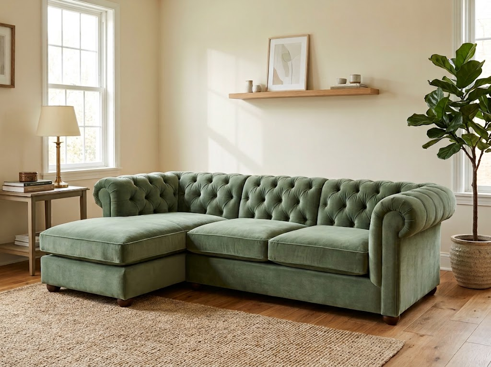

Sofa mulai rusak, kain kusam, atau busa sudah tidak nyaman? Kami membantu memperbaiki dan mengembalikan sofa Anda agar kembali nyaman dan terlihat seperti baru.

Tidak semua sofa harus diganti. Dengan perbaikan yang tepat, sofa lama Anda dapat kembali nyaman dan terlihat lebih baik.
Ubah tampilan sofa dengan kain baru sesuai warna, tekstur dan karakter interior Anda.
Busa yang sudah kempes atau tidak nyaman dapat diganti untuk mengembalikan kenyamanan sofa.
Memperbaiki bagian rangka atau struktur sofa yang mengalami kerusakan agar kembali kokoh.
Memperbaiki jahitan, sambungan kain dan detail sofa yang mulai rusak.
Sofa lama dapat diperbarui kembali dengan kombinasi perbaikan struktur, busa dan kain.
Memiliki kondisi sofa yang berbeda? Kami dapat membantu menentukan solusi perbaikan yang sesuai.
Setiap sofa memiliki cerita dan kondisi yang berbeda. Kami memperbaruinya dengan tetap mempertahankan karakter dan kenyamanan yang Anda inginkan.
Penggantian kain dan busa untuk mengembalikan tampilan serta kenyamanan sofa.
Kami menangani setiap sofa melalui beberapa tahap agar proses perbaikan berjalan dengan tepat dan hasilnya sesuai dengan kebutuhan Anda.
Ceritakan kondisi sofa dan bagian yang ingin diperbaiki. Anda juga dapat mengirimkan foto sofa sebagai referensi awal.
Kami memeriksa kondisi kain, busa, rangka, serta bagian lain untuk menentukan kebutuhan perbaikan.
Sofa mulai diperbaiki sesuai hasil pemeriksaan dan kesepakatan mengenai bahan serta detail pengerjaannya.
Setelah proses selesai, sofa diperiksa kembali sebelum siap digunakan dan kembali menjadi bagian dari ruangan Anda.
Kirimkan foto sofa Anda kepada kami. Ceritakan kondisi atau bagian yang ingin diperbaiki, dan kami akan membantu memberikan gambaran awal mengenai kebutuhan perbaikannya.
Foto sofa dari beberapa sudut akan membantu kami memahami kondisinya dengan lebih baik.
Pilih foto sofa yang ingin Anda konsultasikan.
Setelah menekan tombol, Anda akan diarahkan ke WhatsApp untuk melanjutkan konsultasi.
Kirimkan foto sofa Anda dan ceritakan kondisi yang ingin diperbaiki. Kami akan membantu menentukan solusinya.
Konsultasi Sekarang